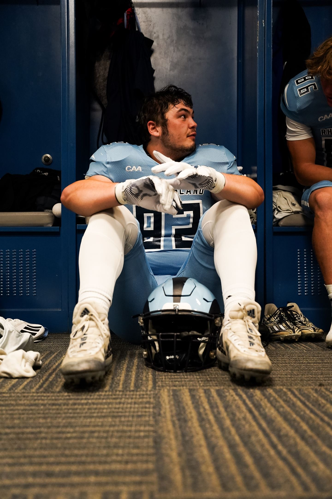
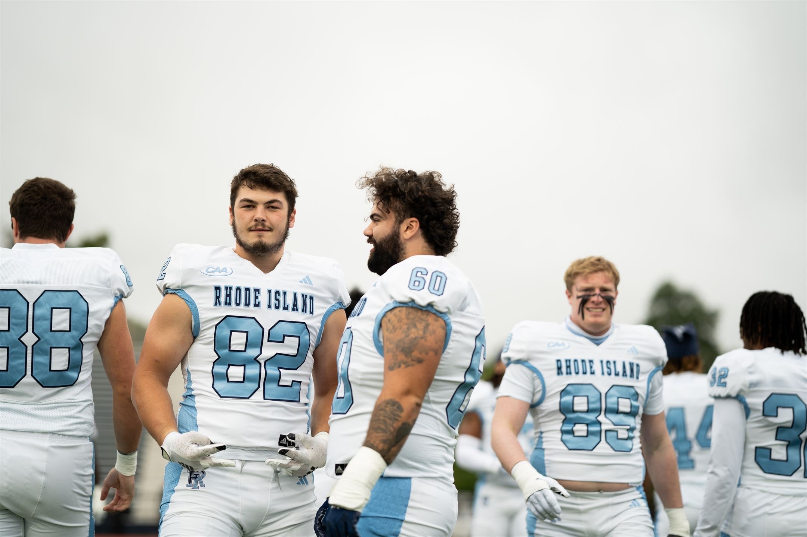

|
 |
 |
 |
About Me
Hello, my name is Jordan Riendeau. I am a student at the University of Rhode Island. A fun fact about me is that I play football here at URI. I am from Narragansett, Rhode Island, and have lived in Rhode Island my whole life. I have a sister and brother and thats about it for me.
Sports
Sports are actually what gave me my best skills in life so far, like teamwork, leadership, probelm solving, and more. Although I play football at URI, it is not my favorite sport. My favorite sport is actually baseball. I had the opportunity to play in colllege, but I turned it down because I wanted to try something new and challenging, so I tool my opportunity to play football.
 